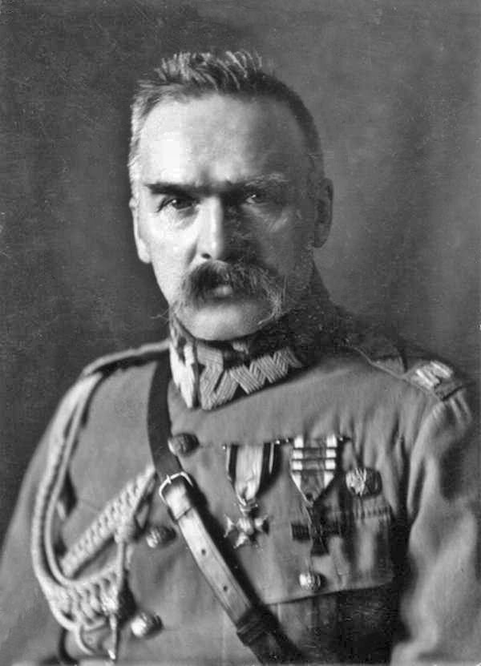

Moja Strona Internetowa

O mnie :
Józef Klemens Piłsudski herbu własnego (ur. 5 grudnia 1867 w Zułowie, zm. 12 maja 1935 w Warszawie) –
polski działacz społeczny i niepodległościowy, żołnierz, polityk, mąż stanu; od 1892 członek Polskiej
Partii Socjalistycznej i jej przywódca w kraju, twórca Organizacji Bojowej PPS (1904) i Polskiej Organizacji
Wojskowej (1914), kierownik Komisji Wojskowej i Tymczasowej Rady Stanu (1917)[2], od 11 listopada 1918 naczelny
wódz Armii Polskiej, w latach 1918–1922 naczelnik państwa, pierwszy marszałek Polski (1920); przywódca obozu
sanacji po przewrocie majowym (1926), dwukrotny premier Polski (1926–1928 i 1930); wywarł decydujący wpływ na
kształt polityki wewnętrznej i zagranicznej II RP.W młodości, podczas prowadzenia działalności konspiracyjnej,
znany pod pseudonimami Wiktor i Mieczysław. Wśród zwolenników Piłsudskiego, zwłaszcza z czasów służby w Legionach,
używano jego przydomków – Komendant, Dziadek, Marszałek oraz Ziuk.